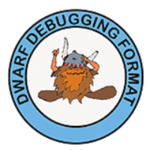
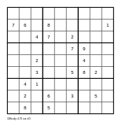

Over the course of my career, I've contributed to open-source projects like Go, Python, LLVM, Clang, Chromium, XLA and many smaller ones. This page is not about those contributions, however.
It's a showcase of projects I initiated myself and have written the vast majority of the code for; there are very few exceptions here - projects I either started together with another person, or didn't initiate but currently maintain - these are explicitly called out in the list.
This list only includes projects above a certain size; for a more complete directory, please see the list of all my public repositories.
|
pycparser - a complete
C99 parser
Originally released in 2008, pycparser is now the most commonly used Python parser for the C programming language. It's used in CFFI, and through it in other prominent Python projects like pycryptography. The following are some additional uses of pycparser, taken from real user reports:
pycparser's input is pre-processed C source code, and its output is an AST data structure. It also comes with a code generator that emits C back from the parsed AST. |
|
|  |
pyelftools - parsing
ELF and DWARF formats
A Python library for parsing and analyzing ELF files and DWARF debugging
information, originally released in 2012.
pyelftools provides both low-level and high-level APIs for querying ELF and DWARF,
and as a proof of capability ships with with a fairly powerful clone
of the This pyelftools is widely used by embedded developers as part of custom toolchains and also in the security community to analyze binaries for exploits. |

|
raft - a complete Go
implementation of Raft
An instructional implementation of the Raft distributed consensus algorithm in Go, and a simple key/value database built on top of it. One of the goals of this project is to explore how the built-in concurrency primitives of Go can help implementing complex algorithms for distributed computing. Comes with an accompanying blog post series that begins with this post, and a powerful automated test suite that helps exercise and visualize the consensus algorithm. |
|
gobyexample - an unofficial
example-driven tutorial for Go
Go by Example is one of the best-known and widely used tutorials for the Go programming language. It teaches the language by presenting practical, brief, well-documented examples for a large variety of topics. It's a bit like the old "cookbook" style books for programming languages, but collected in a single easily-searchable website. This project was founded by Mark McGranaghan. I started contributing in 2019, and took over its maintenance in 2021. |
|
|
static-server -
a simple but powerful server for static files
When developing web applications locally, for basic test cases we can
open an HTML file directly in the browser (using the
static-server is a static file server with useful defaults and some
advanced options (like CORS and TLS); it can be installed or
|
|
|
|
radgrad -
reverse mode automatic differentiation
An educational implementation of a reverse mode automatic differentiation framework, similar to Autograd.
Given a Python function that performs a mathematical computation using
Numpy,
The project is split into two parts for easier comprehension, the code
is heavily commented and the repository's |

|
Pykaleidoscope -
a compiler for a small programming language
A re-implementation of the official LLVM tutorial using Python and the llvmlite library. The tutorial builds a simple programming language called Kaleidoscope, including a parser and code generator using LLVM. My project follows the tutorial chapter by chapter, and produces a working implementation of the Kaleidoscope language that includes parsing, code generation and execution. Pykaleidoscope uses the llvmlite bindings to LLVM to build LLVM IR from the AST, optimize this IR and then compile it to a runtime-executable blob of native code. The result is an evaluator for Kaleidoscope, embedded in Python. |
|
gemini-cli -
access Gemini LLMs from the command-line
Command-line interface for Google's Gemini family of large language models. Useful for terminal-based LLM interactions, as well as textual similarity and clustering analysis using embeddings. The tool comes with useful SQLite integration to facilitate analysis of inputs and results for large corpora. See this blog post for a real-life usage example. |
|
|
pss - power tool for
searching in source code files
A command-line tool for recursive pss was inspired by earlier tools like ack. It was released in 2011 and thus predates newer tools like ripgrep by several years. |
|
|
wasm-wat-samples
- WebAssembly Text code samples
A growing collection of code samples showcasing the WebAssembly textual format. It tries to cover the handling of various WASM data types and instructions, writing small but realistic programs in the language and interfacing with the host via WASI. The project includes JS code to load and test the WASM samples using Node.js as the host. |
|
|
bobscheme
- a Scheme implementation
Bob is a suite of implementations of the Scheme programming language. It includes a Scheme interpreter, a stack-based virtual machine and a compiler (from the Scheme language to the VM's bytecode), all written in Python. It also includes an alternative VM implementation written in C++; this one implements a standard mark-and-sweep garbage collector. A test suite ensures that a set of Scheme programs executes correctly via the interpreter and both the VMs. |
|
|
go-sentencepiece
- a pure Go SentencePiece tokenizer
SentencePiece is an unsupervised text tokenizer for LLMs. This project is a pure Go implementation of the BPE encoder and decoder of SentencePiece, compatible with Google AI's LLMs like Gemma and Gemini. Encoding and decoding is using a pre-trained tokenizer model. Try an online demo in your browser. |
|
|  |
go-sudoku
- a toolkit for solving and generating Sudoku puzzles
go-sudoku can solve Sudoku boards, but its focus is on generating fun Sudoku puzzles. It has an interesting architecture; the code is written in Go and runs from the command-line, but it's also compiled to WebAssembly and is available to use in the browser, with a bit of HTML and JavaScript scaffolding. There's an online demo of generating Sudoku boards available here. |
|
luz-cpu
- a CPU simulator, with an assembler and linker
Luz is a custom 32-bit RISC CPU, created for educational purposes. It's designed to be an embedded CPU with custom memory-mapped peripherals, and comes with a few sample peripherals; more can be plugged in using a simple interface. This project includes a functional simulator for the Luz CPU. The simulator requires a binary image of the program to run, containing binary-encoded Luz machine language. To program the CPU, the project provides an assembler and a linker. The assembler takes mnemonic assembly input and compiles it to an object file with machine code. The assembly language is fairly standard and should be familiar to anyone who writes assembly code for RISC CPUs. The linker enables enables separate compilation, by linking multiple object files into a single binary image; it resolves relocations to support function calls and data references across object files.
|
|
|
bfjit
- JIT for the Brainf*** language
bfjit is a suite of implementations of the Brainf*** programming language, and is described in a series of blog posts starting here. It's a study of implementing simple JIT compilers. It includes several interpreters with increasing level of optimization, a from-scratch JIT compiler written in C++, a JIT compiler that relies on LLVM and yet another JIT compiler written in Python using PeachPy. |
|
|
go-ungrammar
- Ungrammar implementation for Go
Ungrammar is a DSL for concrete syntax trees (CST). This implementation is based on the original ungrammar crate from the rust-analyzer project, also borrowing some test files from it. See this blog post for additional background. |
|
|
wcx64
-
A clone of the GNU
The main goal of this project was exploring how to interact with the
Linux OS in assembly. Most tools do it via |
|
|
tupperformula
- an in-browser demo of Tupper's formula
An in-browser demo of Tupper's formula, a mathematical curiosity that can "draw" arbitrary images - including itself - given the right input. See this blog post for additional details. There's an online demo available here. In allows bi-directional exploration, mapping between the input number to the Tupper formula and the produced plot, and vice-versa. |
|
|
colorful-lines
- an in-browser game
My JS clone of the Colorful Lines game. This code was written in 2010, ported over from an earlier Perl version I wrote in 2003. You can play it online here. |
|
|
line-plotting
- web-based 2D function plotter
An exploration of 2D plotting using JavaScript on a canvas element. Enables drawing arbitrary functions expressed as JS code, with a given sampling (number of points) and automatically scales the Y axis. This demo also implements cubic spline interpolation to interpolate many more points for smoother curves. This is useful to explore how faithfully we can plot 2D functions from a small number of samples. There's an online demo available here. |
|
|
lsystem
- a web simulation of L-systems
An L-system is a formal grammar for expressing fractal-like drawings. This project includes a parser and simulator for the L-system language, producing fractal images on a canvas from a given description and parameters. There's an online demo available here. It has some sample descriptions you can try to generate well-known fractals from very short textual descriptions. |
|
|
js-8080-sim
- online assembler & simulator for the 8080 CPU
Simple online editor for Intel 8080 assembly language, with a simulator and a UI demonstrating the computation results - registers and memory state, and so on. For this project I wrote the assembler and UI, and forked the simulator from another project (with slight modifications). One can run the assembler + simulator from the command line (with Node.js) or in the browser. An online version is available here. |
|
|
perlmix - a simulator and assembler for the MIX computer MIX is a hypothetical computer created by Donald Knuth for his original TAOCP edition. Knuth uses MIX for detailed performance analysis of the algorithms presented in his books. perlmix is a complete implementation of the MIX computer along with the MIXAL assembly language. It helped me run and tinker with the programs taken from TAOCP while reading parts of the book. perlmix is a very old project! I started thinking about it in 2003 and finally completed it in 2005. I no longer maintain it, but the code works just fine and is in the public domain if someone wants to play with it. |
|
|
ESMS
- Electronic Soccer Management Simulator
ESMS is a simulator for fantasy soccer leagues; it hails from the play-by-email fantasy leagues of the 1990s. While this project has been in unmtaintained mode for a really long time now, I'm still listing it here since it holds a special place in my heart. First of all, it was popular! In its heyday, ESMS was used by hundreds of leagues and thousands of people in fantasy soccer communities. And that's in the 1990s, when the internet was a much smaller place. And second, this was my first major programming project, going all the way back to 1998 (keep that in mind if you examine the code!). I started this project together with a friend and we hacked on it together for a year or so, after which I kept maintaining and improving it for a few additional years. |